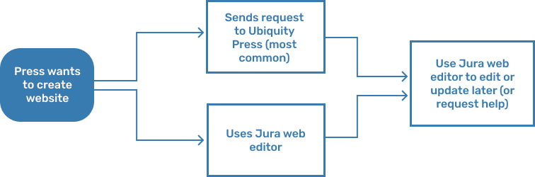

CENTRAL STATION
Creating a website editor/builder tool for Ubiquity Press’s new journal publishing dashboard, Central Station.
OVERVIEW
Ubiquity Press is an academic publishing company with a focus on open access publications. I worked as a UX design intern there from November 2019 to September 2020 with two other design interns.
Our main project was Central Station, a dashboard for Ubiquity Press’s different journal and press publishing tools, processes, and internal work. I worked on the project from its conception, where I helped with everything from creating a design system to mapping out the (very complicated) user flows.
This case study is on one specific part of Central Station that I worked on: the website builder/editor for academic press websites. If you are interested in seeing more of Central Station, please contact me!
BACKGROUND & RESEARCH
As an academic publisher, Ubiquity Press had a lot of different tools for different publishing processes in many different places. Central Station was created in an effort to centralize these processes in one place, and improve the design and experience of the existing tools.
One such tool was a website builder, which academic presses used to design websites for their journals and the organization itself. Websites are key to publications, particularly open-access publications, as they are not only where presses can display their journals but also where they can receive submissions from new authors.
We initially started designing this tool with the intention of it being used for journal websites, but when journal websites were moved over to a different (existing) software we switched to making the tool for press websites only.
PROBLEM
Currently, there are two ways to design a website through Ubiquity Press: presses can send their website design preferences to Ubiquity Press, who will then build the website for them, or they can use the website design tool in a Ubiquity Press platform called Jura.
We got some insights on the current website design flows from talking with press managers at Virginia Tech Press and Stockholm University Press about what they wanted from the publishing platform and their experience with Jura. We also talked with Ubiquity Press developers, publication managers, and staff who would also be using Central Station.
There were a few issues with these processes, both internally and externally.
Most of the external problems had to do with Jura’s design. In order to add or change content on a website, users had to go into Journal Settings and use a wordpress-esque HTML editor. In addition, there were a lot of random buttons for different features that had been haphazardly added over time and had little context or explanation as to what they were for.
Internal problems had to do with efficiency -- developers were spending a lot of time fulfilling press website design requests when they didn’t have to. The company wanted to give more agency to presses so that developers had more time to work on one of the many other projects happening.
GOALS & CONSIDERATIONS
We had a few things to take into account while working on this segment of Central Station, namely:
- Squarespace and Weebly-esque designs (drag and drop, custom interactive layouts) were not possible, given the resources, time, and priority of this tool. The website building tool was one part in a larger product, unlike Squarespace where website design is the product.
- Most of the press people using the tool would not have a web design or development background, and didn’t want to spend a lot of time creating websites.
- Presses had a lot of specific features they wanted, like journal carousels, which explained why there were a lot of random added-on feature options in Jura.
Moreover, we wanted to cut out Ubiquity Press as the middle man for press website design and make it so presses could create their own websites completely independently.
ITERATION 1
Originally, the website builder was only supposed to be for journal websites. Hence, we embedded the builder in the Create New Journal process on Central Station, with the option of editing later in Journal Settings.
With this iteration, we wanted to see if we could modify the existing Jura design to be easier to use. We kept the HTML editor, but tried adding templates to make page design more convenient.
Furthermore, it was still difficult to do more complicated features (like an image carousel) without adding custom buttons.
Later, the team decided to move most of the journal set-up process to a software called OJS (Open Journal Systems), which included the creation of journal websites. We shelved our designs and worked on other parts of Central Station.
ITERATION 2
Our website builder was brought back when the team decided that press websites would be created on Central Station. As a result, we moved the builder to the Create New Press flow, with the option of editing later in Press Settings. We also further integrated visual style (like fonts and colors) and the page navigation set-up.
We decided to scrap the idea of keeping the HTML editor, and instead try out a row and columns design similar to one that another intern was working on for a different Ubiquity Press product.
In this iteration, we attempted to create a modular design flow where users created sections that they could add modules to. Pages were accessed via the navigation set-up, and modules could be customized to be different features, such as an image, text box, or social media widgets.

After reviewing this design with the Ubiquity Press team, we discovered a few fundamental problems:
- Our section/module system didn’t work for multi-column layouts; it could only be assumed that everything simply stacked on top of each other.
- The design was just really confusing and not intuitive. It was difficult to map the section you were working on to the website, and we had users set up text and colors but didn’t make it clear how or where they would be used.
- We didn’t take into account the look or design of the website’s menu, margins, or similar small details.
Later, the team decided to move most of the journal set-up process to a software called OJS (Open Journal Systems), which included the creation of journal websites. We shelved our designs and worked on other parts of Central Station.
ITERATION 3 (FINAL)
In the final iteration, we kept the overall flow of website creation with Create New Press and mainly focused on improving the experience of making the layout for and adding content to pages and navigation. I sketched some user flows for us to help better plan out the website builder process before jumping into Figma again.

I then made some quick lo-fi mockups on figma to help better define the new flow.
To address some of the problems with the previous iteration, we put the section and module editor right next to the page preview, rather than having it at the top of the page. Modules were more clearly laid out in a row within sections (which stacked on top of each other), and their dimensions could be defined in the editor.
I also made the visual settings (font, color), into “styles” similar to Figma and Adobe XD styles. These were set at the beginning of the process and could be used in all the modules or changed as needed.
We also added a menu design section so that the menu design could also be adjusted. Below is the final flow.

NEXT STEPS
When I ended my internship, the Ubiquity Press team had approved of the design and we were preparing the third iteration for user testing with press managers and administrators, who would be the main stakeholders using the web builder tool. It is currently going through user testing as of November 2020. While this tool was not ready to be shipped yet, a few of the more general parts of Central Station were in the process of being shipped.
REFLECTION
Working on this tool was quite the ordeal! It not only took us a while to figure out a viable flow for it, but we also were learning bits and pieces about how the website building process worked while we were designing.
My main takeaway from this project was to spend more time on planning those user flows! I think a lot of the time we just plunged straight into creating designs without really thinking them through first. When we took some time to really map out some flows, we were more successful.